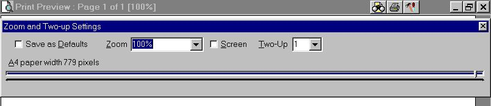
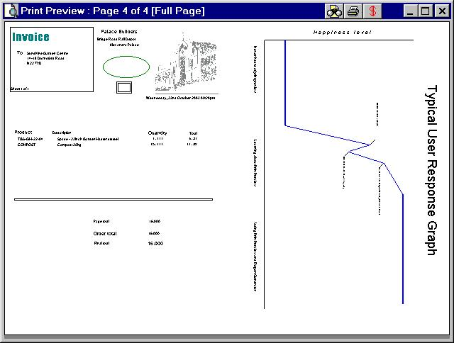

The print preview window deliberately has as few visible buttons and controls as possible, to allow as much of the report as possible to be shown on the screen.
A small toolbar is displayed over the window titlebar containing a minimal set of buttons for zooming, printing, page setup, and registering the software.
Mouse and keyboard events which can be used are:
+ Zoom in. The page can be magnified up to 999%
- Zoom out. Display several pages on the screen at once, up to the full report.
Cursor up/down/left/right, and drag with left mouse button held down to move the paper (when it does not entirely fit in the window). Shift+cursor keys pan over the document in smaller movements, Control+cursor keys move one pixel at a time.
When in designmode (see below), dragging with the left mouse when on a field moves just that field, not the paper. The paper can still be dragged by starting on an unoccupied area. Dragging a field off the paper deletes it, after a confirmation message.
PageDown/PageUp. View the next/previous (set of) pages of the report.
Home/End. View the first/last page of the report.
Escape. Exit without printing. Also Alt F4.
Alt Z, or clicking on the Zoom button on the title bar. See Zoom Window.
Alt P, Control P, or clicking on the Print button on the title bar. The standard windows printer selection dialog is shown.
Alt R, or clicking on the Registration button on the title bar. See Registering the Software. Support Questions may also be emailed from this window.
The following only apply in design mode:
Moving the mouse over an existing field causes a dotted box to be displayed around the field to indicate it is the current selection. This only occurs if the centre of the field is on screen.
Alt S, or clicking on the Page Setup button on the title bar.
The standard windows page setup dialog is shown.
[Note this may become a "tools" button, with several more options in v0.2]
Left Double Click. Edit the field under the cursor.
Right click. Popup a context sensitive menu to insert a new field or resize/respace the field under the cursor.
Context Sensitive Menu key (to the right of the spacebar on most keyboards). Same as right click.
Tab and shifttab move between the fields currently showing on screen.
PageDown/PageUp/Home/End are ineffective in design mode.
Previous ScreenShot Next ScreenShot

The Zoom Window.
The zoom window appears when the Zoom button on the title bar (a page with a pair of binoculars over it), or Alt Z is pressed.
Save as Defaults is automatically checked when values are changed.
| 999%, 800%, 400%, 200%, 100% | The default zoom is always 100%.
A Zoom of 50% is half as wide, half as long, ie a quarter of the size.
Other values may be entered manually. |
| Screen Width | Sets the paper width to fill the window (so technically it
is only screen width when the preview is maximised) |
| Full Page | Makes a single page image is as large as possible
while still fitting inside the window. |
| 2x1,4x2, etc. | A number of multi-page views selected based on the current window size, paper type, and orientation. Not available in design mode. Note that this is a small subset of the views allowed via the + and - keys. Other values may be entered manually. |
Previous ScreenShot Next ScreenShot

An example Two-up Print.
This control is only displayed when the paper selected is A4 portrait, and the zoom selected is 100%, and when in design mode.
[Margins are disabled in version 0.2. Word wrapping would need to be performed during datastream creation, in any case.]
| Gry | The internal value held as an integer. Most users should ignore this. For diagnostic/clarification purposes only. |
|---|---|
| None | Position hints are not displayed, the default. |
| Percent | A percentage of the paper width and height, eg 1.25%. |
| Inches | Imperial measurements are shown as fractions, to the nearest 1/32 of an inch, eg 1 1/16, 1 3/32, 1 1/8 etc. |
| Centimetres | Centimetres shown to nearest 0.5mm, eg 2.50cm, 2.55cm, 2.60cm. |
[Note: rotation is not supported in print from designmode]
Table of Contents Previous Page - Installation Next Page - Reference Section Part 2